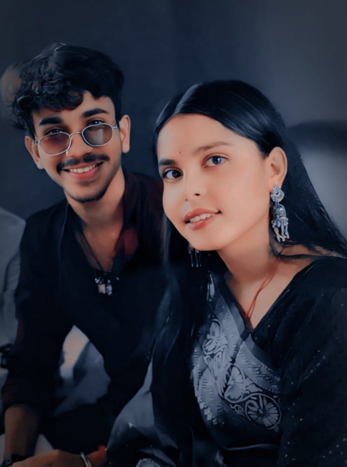

my brother is my life.this is best person in my life,My brother is very polite by nature and is loved by one and all. He often shares his chocolates, sweets and candies with me. He loves playing snakes and ladders and ludo with me during weekends. He shares everything with me and is very comfortable discussing his classes, school friends and homework with me.
My dearest brother, did you know that adoration for you increases with every second that passes by? You will always be my treasure foreveIt's not always easy to put how you feel into words (especially when talking to a brother). It's totally normal to need a little help to show your brother how much you love him; after all, he might be used to your fighting words. Whether you want to make him laugh or get a little sentimental,you can celebrate the unique relationship or special bond you have by choosing a great brother
